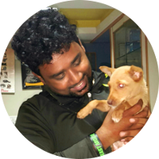

Address
Sy.No. 18/2, K. Chudahalli, Somanahalli Post, Near Guhantara Resort & KMS Farm, Uttarahalli Hobli, Kanakapura Main Road, Bangalore - 560 082
Be their voice, be their hope - Join us in creating a better world for animals.
 Praveen Kumar L also affectionately called Rider Praveen, is an ex-gym instructor who gave up his job, his means of livelihood, all his and his family’s assets and savings to start We Save Animals (WSA) Welfare Trust. From paralysed, blind, old-age animals to accident cases, cruelty cases and terminally ill animals - he takes them all in, giving them happiness, food and a home in his shelter.
It started for Praveen in 2013, when he rescued a kitten with a spinal injury. He nursed it at home, but it passed away after a week, leaving Praveen to wonder what he could do to help numerous animals like this, that suffer in silence. So he started by rescuing injured animals, and keeping them at home. Soon, as the number of rescues increased, he started looking for temporary shelters to house them. Eventually, the news of his rescue got around and he started attending to approximately 4-5 cases in a day were People Use to tag him in social media Like Facebook etc. He took the help of Dr. Girish from Blue Cross and Dr. Lohith frm Maruthi pet clinic and started an account in their respective clinics, so that injured animals could be attended to, without a delay due to the finances. So as the number of rescues went up, so did the bill amount in the clinics. But that did not deter Praveen. The word spread, and Praveen, who was initially contacted for rescues only around South Bangalore, started getting calls for help for cases in Mysore, Mandya, Chikmagalur Hosur etc. To manage things better, Praveen started a WhatsApp group With Just 6 People And started attending To this cases full-time. He had no option but to give up his job, financial help was low, but with his family standing behind him, praveen kept doing whatever he could for the animals.